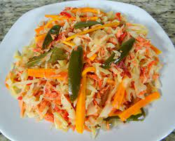
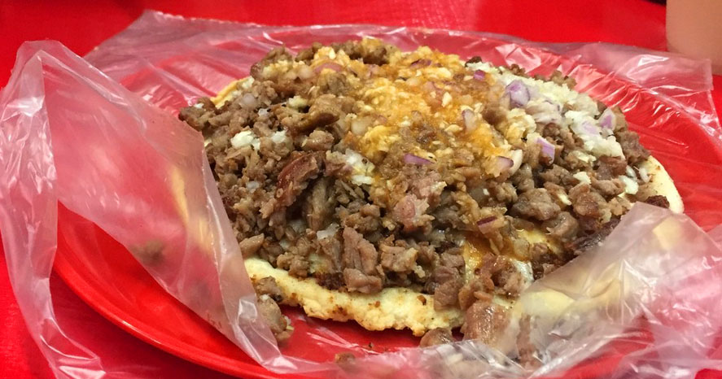

Aguachile
Para enchilarse y disfrutar unos camarones que como su nombre lo indica están bañados con chile, limón acompañados con cebolla morada y pepino

Marlin en escabeche
El marlin en escabeche es muy tradicional de Mazatlán aunque debemos mencionar que hay muchos platillos con marlín que podrías probar como las empanadas de marlin, el marlin a la mexicana, Pate de Marlin, estofado de Marlín y muchos que incluyen el delicioso Marlin ahumado entre sus ingredientes.
Pescado Zarandeado
El pescado Zarandeado es uno de los platillos favoritos para comer en Mazatlán para compartir con la familia. Se vende dependiendo de lo que pese el pescado y dicen que si te lo comes frente al mar viendo las tres islas sabe aun más rico.

Chorreada
La chorreada es una gordita embarrada con asientos de puerco o zurrapas, queso de chihuahua derretido y carne. El platillo ideal para los amantes de la carne y el queso.
Frijoles Puercos
Los frijoles puercos que vas a comer en Mazatlán básicamente se preparan mezclando frijoles, Chorizo, queso, manteca y algunas personas les ponen atún; son deliciosos y saben aun mejor si están acompañados con birria o un pastel de atún.